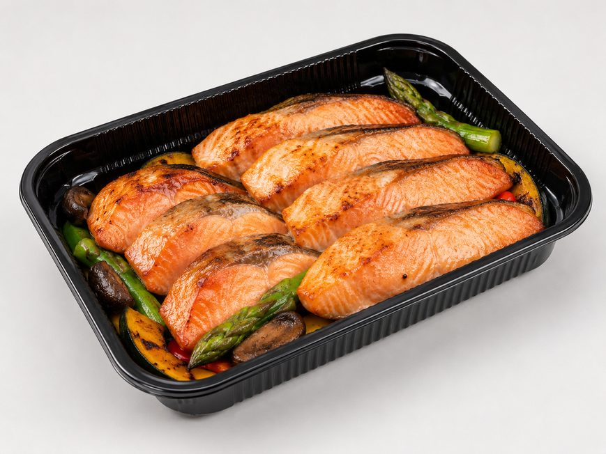
1ラインの稼働率向上
空いた時間のラインで、業務用の製造を増やせます。設備は同じまま製造量が増えるので、固定費の負担が軽くなります。
2販路開拓はGrino、製造に集中
販売先の開拓、品質・仕様・価格の提案と交渉、受発注と請求の窓口まで、Grinoが担います。販売先への営業に人を割かずに、毎日の食事に使われる販路へ届けられます。
3得意な料理から提案
新しい品を一から開発しなくても、得意な料理をもとに規格を合わせ、他の工場の品と献立に組みます。
こんな工場に
| 項目 | よくある取引 | Grinoとの取引 |
|---|---|---|
| 販売先 | 自社で探して、営業する | Grinoが、社食や施設、ネットスーパーへ提案する |
| 商品 | 今の商品を、そのまま卸す | 一手間加えて、新しい販路で売れる形にするトレーや500gの袋に詰める、具材を足す、温め方をそろえる |
| 付加価値 | 味と価格で比べられる | これまでなかった新素材の容器と組み合わせて、付加価値をつける温めて、容器のまま出せる。厨房の手間が減る |
| 商品の名前 | 自社のブランド | Grinoのブランド小売のPB（プライベートブランド）と同じ形 |
工場との条件、現場で選ばれる味、給食会社の決め手。それぞれを知る3人と代表が、貴社の商品を販売先につなげます。
Apple Japanで8年、全国の売場改善を担当。オフィス向けのサラダ宅配で創業し、自ら厨房に立って、8坪の厨房から月7,000食を届けました。その後、商品開発、提携工場の開拓、冷凍物流、品質管理まで、冷凍食品の供給体制を自社でつくってきました。
工場と販売先の条件をすり合わせ、規格と価格を整えます。
社食で選ばれる献立を知り、冷凍して温めても崩れない形に整えます。
法人営業と企画を担ってきた経験から、給食会社の決め手に合う提案にします。
提案先は、社食や高齢者施設の厨房を運営する給食会社と、小売の2つです。どちらも、毎日の食事に使う主菜と副菜を求めています。季節の商品と違い、1年を通して使われる品です。
7,600か所
全国の事業所の給食施設（社食など、2025年3月末）
年約11億食
老人ホームなど、高齢者施設（入所系の介護施設）の食事（推計）
年約12億食
病院の食事（上限の推計）
調理の求人倍率は2.2倍（全職業は1.1倍）。募集しても人が来ない現場ほど、工場でつくった料理が必要になります。
これからの販売先：ホテルの朝食、工場の夜勤の食事
施設数と食数は、市場の大きさを示す数字です。出典：厚生労働省「令和6年度衛生行政報告例」（事業所の給食施設、2025年3月31日現在）、「令和6年介護サービス施設・事業所調査」（入所系4種の在所者数に3食と365日を掛けた推計）、「病院報告 令和6年」（在院患者延数に3食を掛けた上限の推計）、「一般職業紹介状況」（2026年3月）
貴社の得意な料理が、どの販売先に合うか。
30分の面談でお話しします。
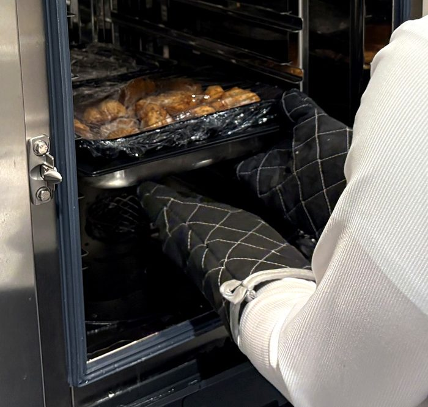
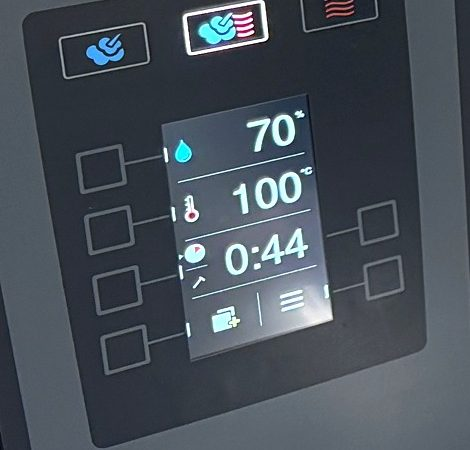
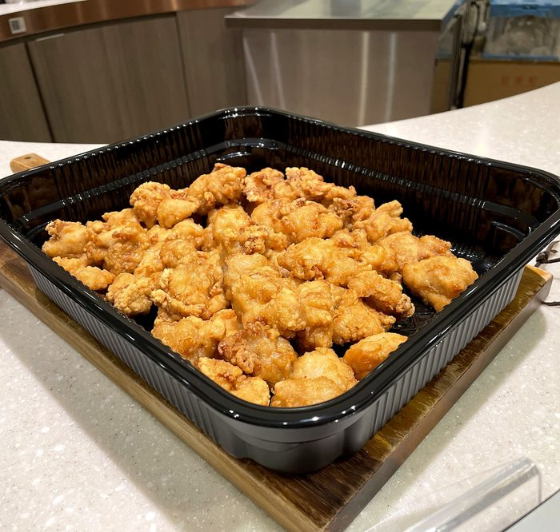
1日50食の社食での試算では、厨房の作業時間は1日12.5時間から9.2時間に減ります。社食の大手の見積と、先方に確認いただいた作業時間をもとにした保守的な見込みです（実測ではありません）。
小売のPB（プライベートブランド）と同じ形です。商品はGrinoのブランドで販売し、販売先への営業と商談はGrinoがまとめて行います。
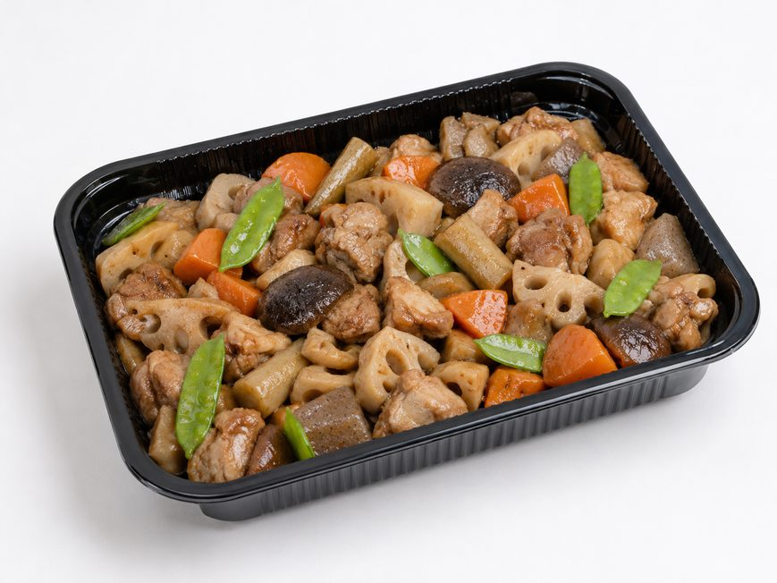
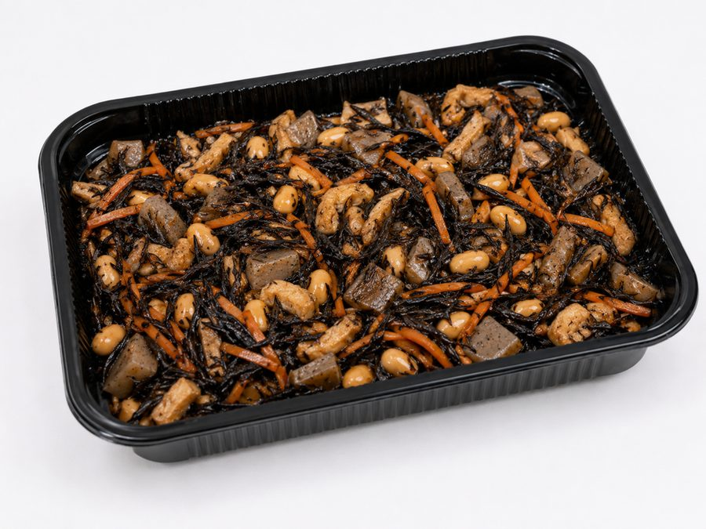
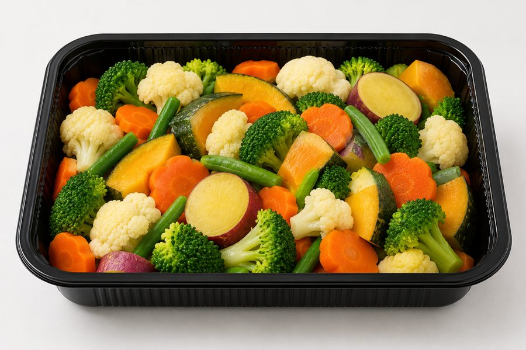
家庭向けの冷凍食品から弁当、業務用のトレーまで、20種類以上の商品を提携工場と一緒につくってきました。レシピと配合、冷凍しても味が落ちない設計、包材と表示まで、Grinoが担います。
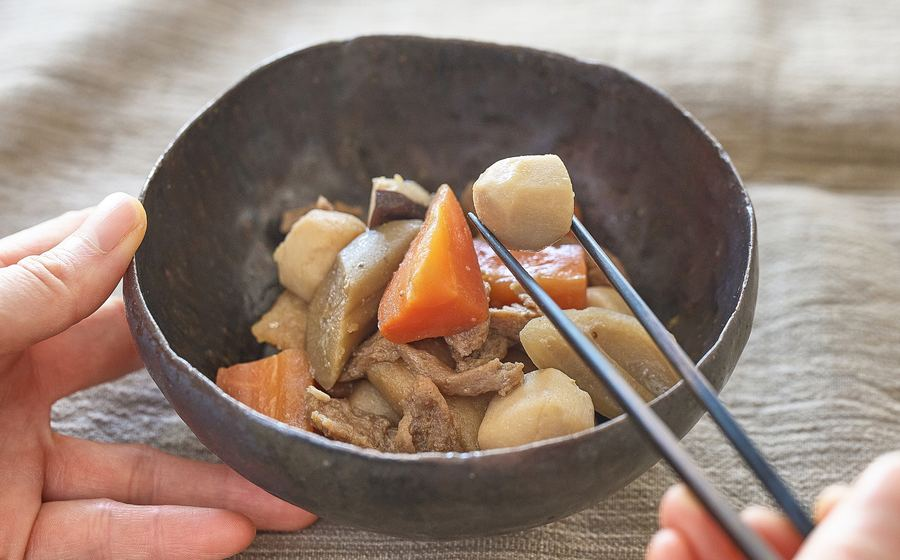
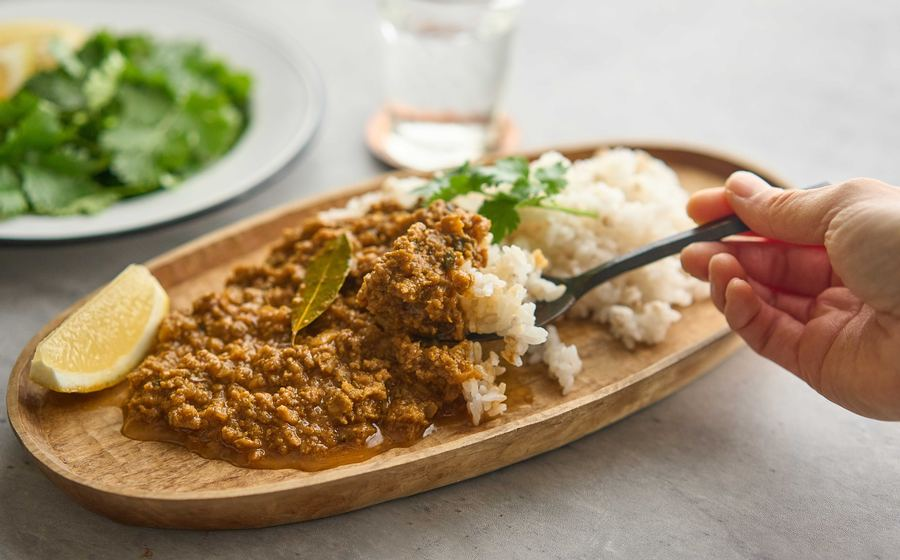
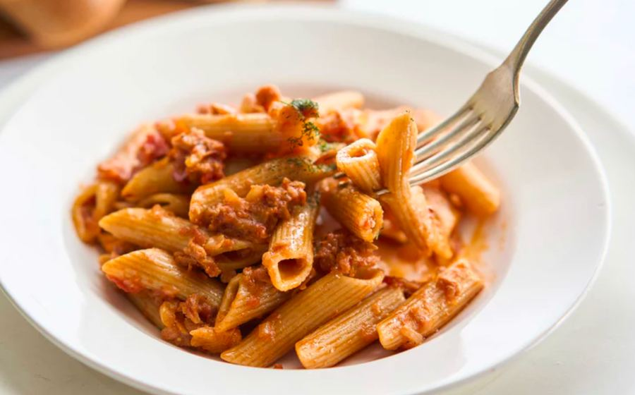
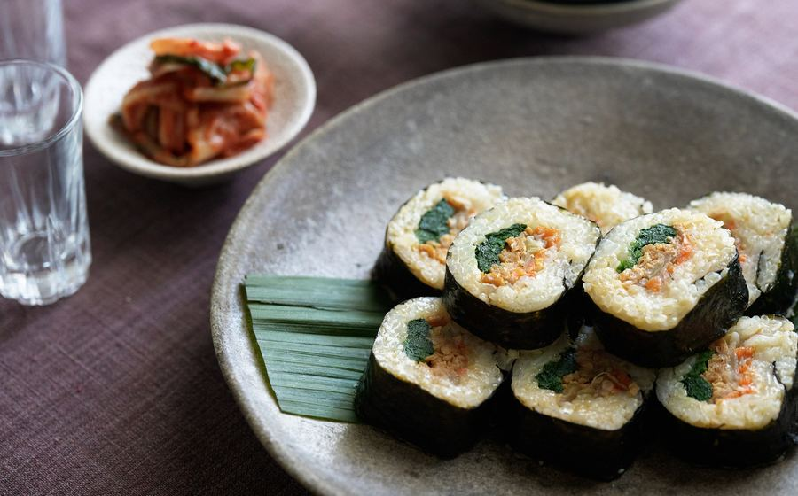
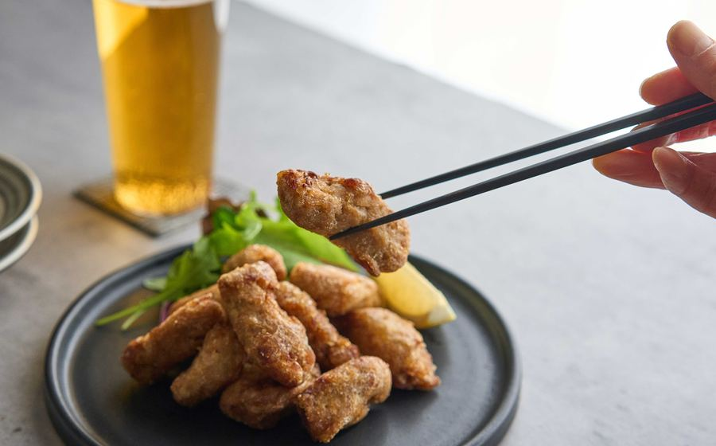
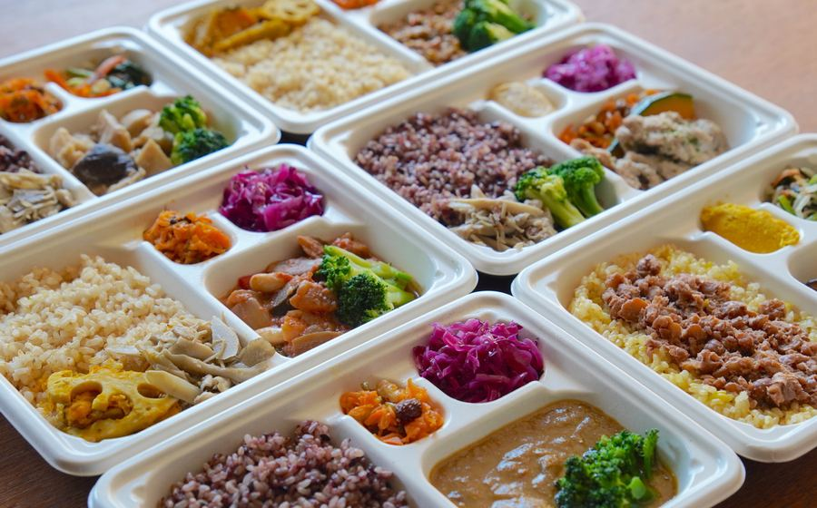
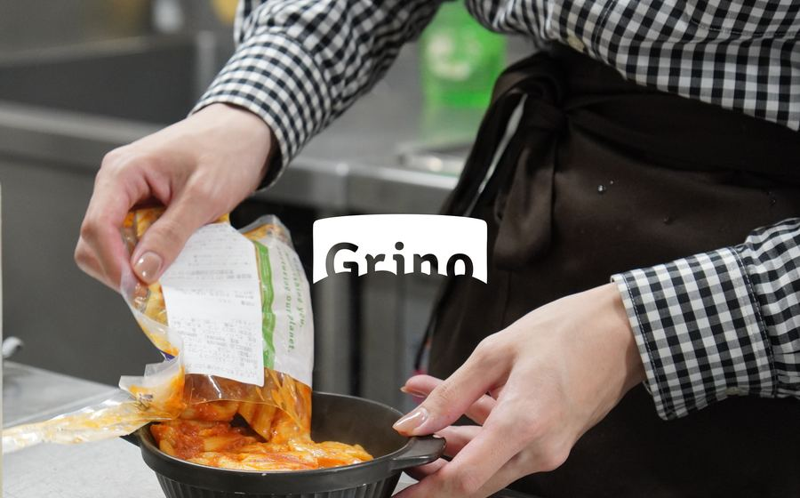
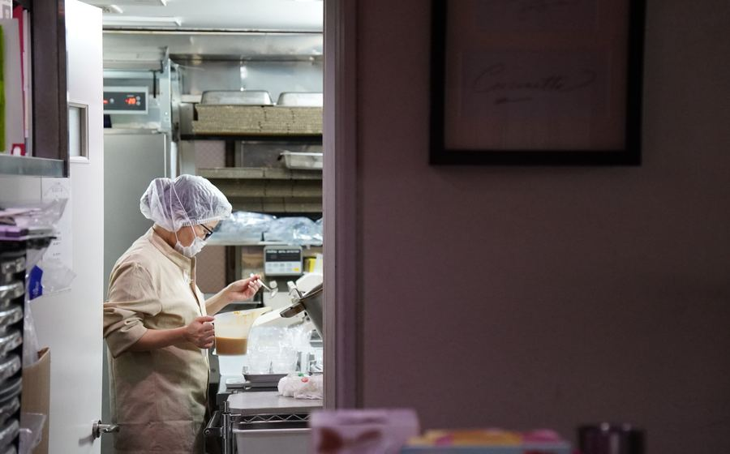
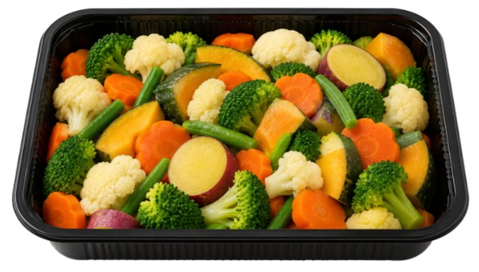
CPET素材の、業務用の標準サイズ（ホテルパン規格）の容器です。1トレー10食で、−18℃から220℃まで同じ容器のまま、冷凍から温め、提供まで通せます。
| 主菜 2kg | 2,110〜2,640円 |
|---|---|
| 副菜 1kg | 1,060〜1,270円 |
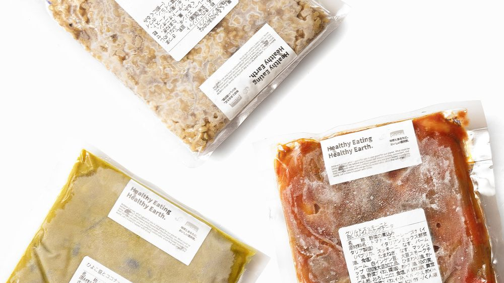
500gの袋を、湯煎やスチコンで温めます。厨房でも売り場でも盛り付けやすく、少量から扱えるので、三方袋の品も積極的に提案しています。
| 主菜 500g | 530〜660円 |
|---|---|
| 副菜 500g | 530〜630円 |
仕入れの目安は、1パックあたり、税別。容器、袋、送料を含む、指定先への着値です。販売先の予算をもとにした社食向けの主菜と副菜の目安で、上限や発注の確約ではありません。目安を超える商品も、仕様や量目を含めてご相談ください。小売向けの個食、常温品、ロングライフチルドは、別途ご相談ください。量産時の製造ロットの目安は1品300〜600kgです。業界初は、CPET素材のホテルパン規格の容器として（当社調べ、2026年10月）。
Grinoが目指すこと
Grinoは、全国の食品工場を1つの生産ネットワークとして束ね、業務用厨房から調理をなくす規格を、食事提供の事業者に供給する会社です。
既存の商品から、提案できるものを一緒に考えます。新たな試作や正式な見積は要りません。カタログや規格書があれば、相談の材料にします。
info@grino.lifeRed Yellow And Green 株式会社（Grino） 代表取締役 細井 優
東京都新宿区百人町1-10-15 JR新大久保駅ビル4F grino.life